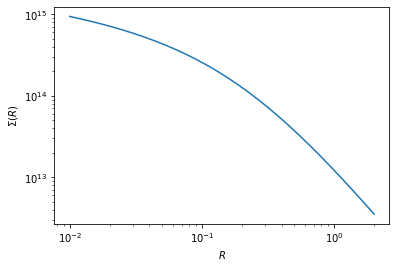

Day 4 Solutions
[21]:
%matplotlib inline
import matplotlib.pyplot as plt
import numpy as np
from scipy.optimize import curve_fit
[22]:
# working with the classes
# NFW --> delta_sigma
class constants:
"""Useful constants"""
G = 4.301e-9 #km^2 Mpc M_sun^-1 s^-2 gravitational constant
H0 = 100. #h kms-1 Mpc-1 hubble constant at present
omg_m = 0.315 #omega_matter
class halo(constants):
"""Useful functions for weak lensing signal modelling"""
def __init__(self, log_M200m, con_par):
self.m_tot = 10**log_M200m # h-1 Msun
self.c = con_par # concentration parameter
self.rho_crt = 3 * self.H0**2 /(8.0*np.pi*self.G) # rho critical
self.r_200 = (3 * self.m_tot /(4*np.pi*200*self.rho_crt*self.omg_m))**(1./3.) # Mpc h-1
self.rho_0 = self.c**3 * self.m_tot/(4 * np.pi * self.r_200**3 *(np.log(1 + self.c) - self.c/(1 + self.c)))
#print("log_M200m = %s h-1 M_sun, c = %s \n"%(np.log10(self.m_tot), self.c))
def nfw(self,r):
"""given r, this gives nfw profile as per the instantiated parameters"""
r_s = self.r_200/self.c
value = self.rho_0/((r/r_s)*(1+r/r_s)**2)
return value
def sigma_nfw(self,r):
"""analytical projection of NFW"""
r_s = self.r_200/self.c
k = 2*r_s*self.rho_0
sig = 0.0*r
c = 0
for i in r:
x = i/r_s
if x < 1:
value = (1 - np.arccosh(1/x)/np.sqrt(1-x**2))/(x**2-1)
elif x > 1:
value = (1 - np.arccos(1/x)/np.sqrt(x**2-1))/(x**2-1)
else:
value = 1./3.
sig[c] = value*k
c=c+1
return sig
def avg_sigma_nfw(self,r):
"""analytical average projected of NFW"""
r_s = self.r_200/self.c
k = 2*r_s*self.rho_0
sig = 0.0*r
c=0
for i in r:
x = i/r_s
if x < 1:
value = np.arccosh(1/x)/np.sqrt(1-x**2) + np.log(x/2.0)
value = value*2.0/x**2
elif x > 1:
value = np.arccos(1/x)/np.sqrt(x**2-1) + np.log(x/2.0)
value = value*2.0/x**2
else:
value = 2*(1-np.log(2))
sig[c] = value*k
c=c+1
return sig
def esd(self,r):
"""ESD profile from analytical predictions"""
val = self.avg_sigma_nfw(r) - self.sigma_nfw(r)
return val
[23]:
hp = halo(14,5)
[24]:
print(np.log10(hp.m_tot), hp.c, np.log10(hp.rho_crt), hp.r_200, np.log10(hp.rho_0))
14.0 5 11.443311952479494 1.1093952351546374 14.880882611979143
[25]:
rbin = np.logspace(-2,np.log10(2),30)
plt.plot(rbin, hp.nfw(rbin), '-')
# plt.plot(rbin, hp.esd(rbin)/(1e12), '-')
plt.xscale('log')
plt.yscale('log')
plt.xlabel(r'$r$')
plt.ylabel(r'$\rho(r)$')
# plt.ylabel(r'$\Delta \Sigma (R) [{\rm h M_\odot pc^{-2}}]$')
[25]:
Text(0, 0.5, '$\\rho(r)$')
[26]:
rbin = np.logspace(-2,np.log10(2),30)
plt.plot(rbin, hp.sigma_nfw(rbin), '-')
plt.xscale('log')
plt.yscale('log')
plt.xlabel(r'$R$')
plt.ylabel(r'$\Sigma (R)$')
[26]:
Text(0, 0.5, '$\\Sigma (R)$')

[27]:
rbin = np.logspace(-2,np.log10(2),30)
plt.plot(rbin, hp.esd(rbin)/(1e12), '-')
plt.xscale('log')
plt.yscale('log')
plt.xlabel(r'$R$')
plt.ylabel(r'$\Delta \Sigma (R)$')
[27]:
Text(0, 0.5, '$\\Delta \\Sigma (R)$')
[28]:
def model(x, log_M200m, c):
log_M200m = np.log10(log_M200m) + 14 # we are looking in units of 10^14
hp = halo(log_M200m, c);
esd = hp.esd(x)/1e12 # remember we are working with pc not Mpc
return esd
[29]:
print(model(np.linspace(0.2,2.0,5), 13, 6))
[392.98477752 216.4730308 138.35991084 97.34318514 72.89303872]
[30]:
from scipy.optimize import curve_fit
[31]:
data = np.loadtxt('/home/idies/workspace/Storage/divyar/IAGRG_2022/DataStore/iagrg_dsigma.dat')
x = data[:,0]
y = data[:,1]
yerr = data[:,2]
[32]:
plt.figure(dpi=150)
# curve_fit requires initial guess (p0) to get resonable fits, sigma takes in the y errobars
popt, pcov = curve_fit(model, x, y, p0=[12,0.5], sigma=yerr)
log_M200m, c = popt
sig_logMh, sig_c = np.sqrt(np.diag(pcov)) # pcov is the covariance between the parameters
# rough estimate of chisq
chisq = np.sum((y-model(x, log_M200m, c))**2*1.0/yerr**2)
dof = 10 - 2 # 10 datapoints - 2 parameters
plt.errorbar(x, y, yerr=yerr, fmt='.', capsize=3, label='Data')
plt.errorbar(x, model(x, log_M200m, c) , fmt='-', label=r'Fit, $\chi^2 /{\rm dof} = %2.2f/%d$'%(chisq,dof))
plt.title(r'$M_{\rm 200m} = %2.2f \pm %2.2f \times 10^{14} \,h^{-1} M_\odot,\, c = %2.2f \pm %2.2f$'%(log_M200m, sig_logMh, c, sig_c))
plt.legend()
plt.xlabel(r'$R[{\rm h^{-1}Mpc}]$')
plt.ylabel(r'$\Delta\Sigma [{\rm h M_\odot pc^{-2}}]$')
plt.xscale('log')
plt.yscale('log')
<ipython-input-28-d986e37204cc>:2: RuntimeWarning: invalid value encountered in log10
log_M200m = np.log10(log_M200m) + 14 # we are looking in units of 10^14
When we compare our halo masses with the ones using SDSS shape catalog arXiv:1707.01907, we found that within the error bars our results are in agreement with the reported ones as given in subpanels of fig 4 and fig 5 in arXiv:1707.01907.
[ ]: